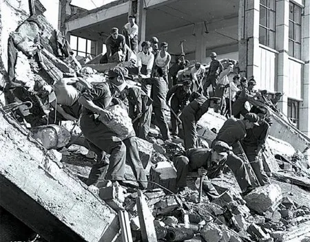

The Tangshan Earthquake
The Night of July 28, 1976 At 3:42 AM, while the industrial city of Tangshan, China, was in deep sleep, a magnitude 7.8 earthquake struck with a force equivalent to 400 Hiroshima bombs. This was a shallow-focus quake, meaning its energy was released just 11 miles below the surface, directly beneath the city center. In less than 30 seconds, 85 percent of Tangshan's buildings—including hospitals, schools, and factories—simply ceased to exist. The tragedy was amplified by a catastrophic lack of warning. Just one year prior, Chinese officials had successfully evacuated the city of Haicheng before a major quake, but in Tangshan, the seismic monitors remained silent. Because the city was built on alluvial soil that liquefied during the shaking, entire neighborhoods were swallowed by the earth. While official reports originally listed the death toll at 242,000, modern historians and independent researchers estimate that upwards of 655,000 people perished, making it the deadliest earthquake of the 20th century.

The Strategic Response: From Isolation to Self-Reliance The immediate strategy following the collapse was one of Geopolitical Isolation. In the midst of the Cultural Revolution, the Chinese government adopted a strategy of "Self-Reliance," flatly refusing all offers of international aid from the United Nations, the Red Cross, and Western nations.
The Military Mobilization Strategy: To compensate for the lack of outside help, the state executed a massive internal strategy, deploying over 100,000 soldiers from the People’s Liberation Army. However, because the railway lines and bridges were destroyed, these troops had to march on foot and dig through the rubble with their bare hands for the first 48 hours.
Key Facts
Date: July 28, 1976
Location: Tangshan, China
Casualties: 242,000 (official) to 655,000+ (estimated)
Cause: Tectonic Displacement (Magnitude 7.8 shallow-focus earthquake and soil liquefaction)
The Information Control Strategy: For years, the government tightly controlled the narrative and the death toll to project an image of national strength. It was a strategy of "controlled mourning," where the scale of the loss was minimized to maintain political stability during a leadership transition.
The Lesson The Tangshan disaster reveals the danger of "Strategic Silence." It proves that while a tragedy may be natural in origin, the human response—specifically the refusal of international cooperation and the suppression of data—can exponentially increase the suffering. Tangshan was eventually rebuilt, but the strategy of isolation used in 1986 remains a haunting case study in how politics can interfere with the preservation of life.